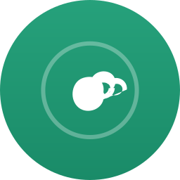

InvestArab Bridged USDT

Bridged token. Issued and operated by InvestArab on Base. Not issued by, redeemable by, or affiliated with Tether. The T mark is used to identify a bridged version of a Tether-issued token.
Network: Base (chain ID 8453)
Contract: 0x65e2F96217D84e2D712c1f17819f95F593Eb41Fb
Decimals: 6 · fixed supply 100,000,000 · no transfer fee